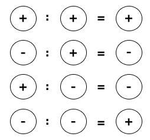

”множение
„тобы перемножить два рациональных числа, надо перемножить их модули и перед результатом поставить знак плюс, если оба множител€ имеют одинаковые знаки, или минус, если множители имеют разные знаки.
|
ѕример
(-2) · (-3) = +6; (-0,5) · (+2) = -1;
(+2) · (+4) = +8; (+0,5) · (-4) = -2. |
≈сли хоть один множитель равен нулю, то и произведение равно нулю.
|
ѕример
0 · (-5) = 0; (+2,5) · 0 = 0. |
„тобы умножить несколько чисел с разными знаками, надо перемножить модули всех чисел и определить знак произведени€: если число отрицательных множителей чЄтное, то произведение будет положительным, если число отрицательных множителей нечетное, то произведение будет отрицательным.
|
ѕример
(-5) · (+4) · (-2) · (-3) · (+10) = -1200 (число отрицательных множителей нечетное Ц три).
(+2,5) · (-7,3) · (+ 4) · (-2) · (-1) · (+4) · (-0,5) = +292 (число отрицательных множителей четное Ц четыре). |
«аконы умножени€ натуральных чисел справедливы дл€ всех рациональных чисел.
—хема определени€ знака произведени€ двух рациональных чисел:
ƒеление
„астное от делени€ двух рациональных чисел с одинаковыми знаками равно частному их модулей.
„астное от делени€ двух рациональных чисел с противоположными знаками равно частному их модулей, вз€тому со знаком минус.
|
ѕример
(-16) : (-4) = +4; (+28) : (+4) = +7;
(-48) : (+12) = -4; (+16,8) : (-8) = -2,1. |
—хема определени€ знака частного двух рациональных чисел:

|